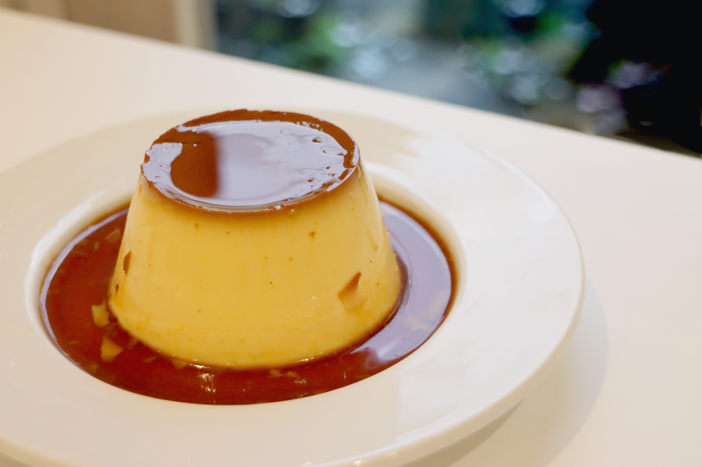
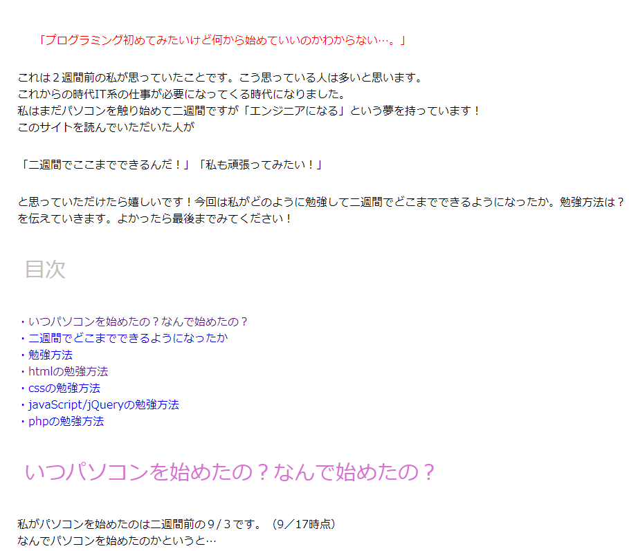
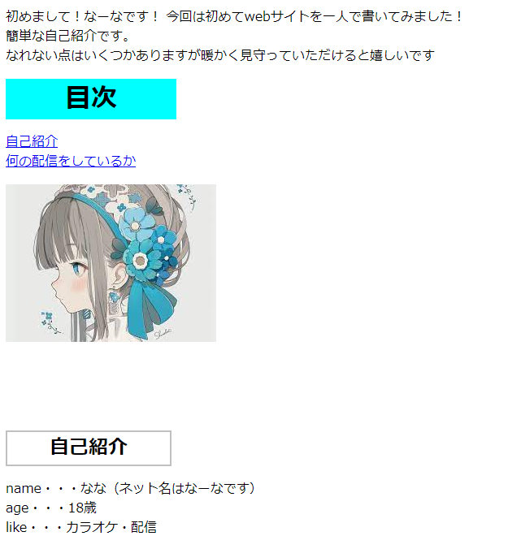
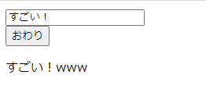
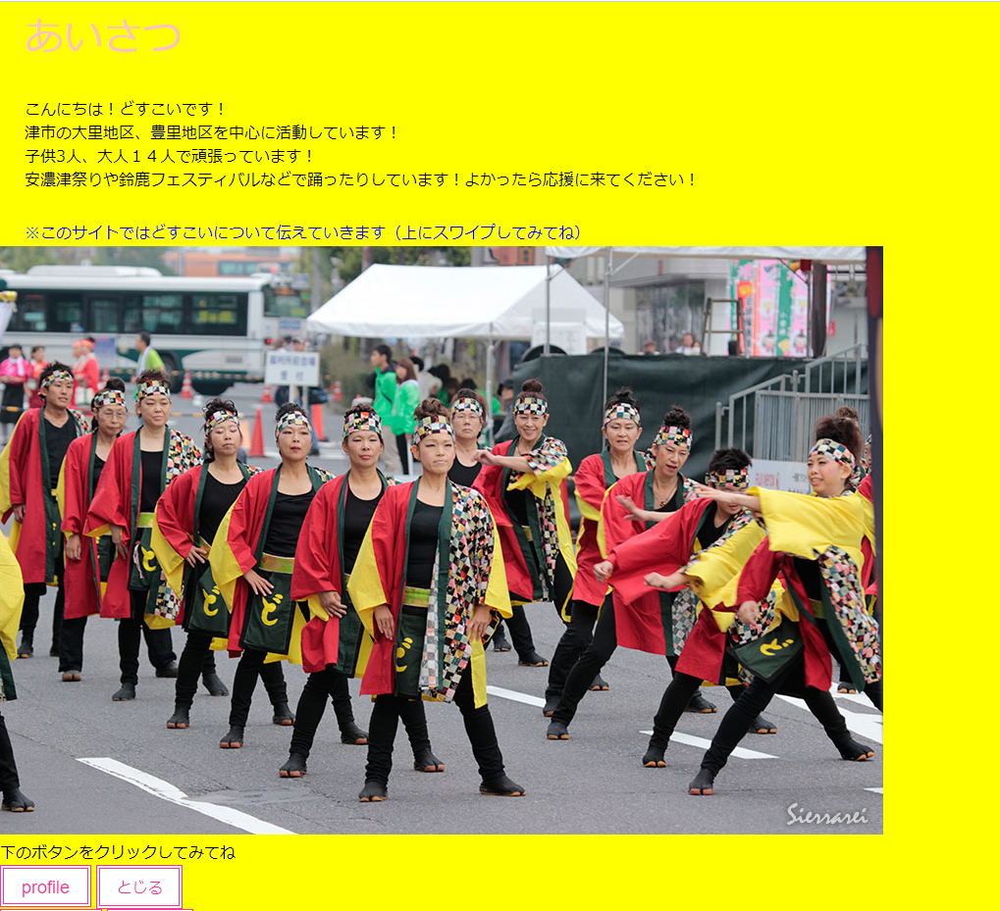

- 名前: 山路奈々
- 生年月日: 2004年7月23日
- 好きな食べ物: プリン、焼肉、お寿司、ラーメン、ミント
- 趣味: カラオケ、よさこい
-
自己PR:
山路奈々(やまじなな)と言います！現在高校3年生です。
私の長所は人の前に立つことに慣れていることと短期記憶が得意なことです！
人の前に立つことに慣れている理由は高校一年生で演劇部をし二年生の後半から生徒会を始めたからです！
生徒会のほうでは三年生で生徒会長をしていました。生徒会長の仕事で行事の開会式で会長挨拶をするという仕事がありました。
緊張はしましたが落ち着いて挨拶をすることができました。
私はこの経験を活かしプレゼンなどで落ち着いて発表をしていきたいです！
二つ目の長所の短期記憶が得意なことに気が付いたのは友人とのドライブの時です。
私は昔一度通った道を覚えることができます！
私はこの時から一度見たことは道以外のことでも覚えられるようになりました。
私はこの長所を活かしながらパソコンの勉強をしました。
その結果、一か月でHTML.CSS.SCSS.JavaScript.jQuery.PHPの基礎ができるようになりました。
今はフルスタックになることを夢に頑張っています！！
あと半年でWordPress、また貴社で必要な技術を勉強をしていきたいと考えています！

Portfolio
自己紹介
経歴
2004年7月23日、三重県で誕生。
2017年3月、大里小学校を卒業。
2020年3月、豊里中学校を卒業。
2020年4月、津商業高等学校に入学。
2023年3月、津商業高等学校卒業見込み。
作品

プログラミングの学習について

私の自己紹介

笑顔にするプログラム

安濃津よさこいについて
連絡先
電話番号: 090-3383-4950
メールアドレス: y.nana0723@gmail.com